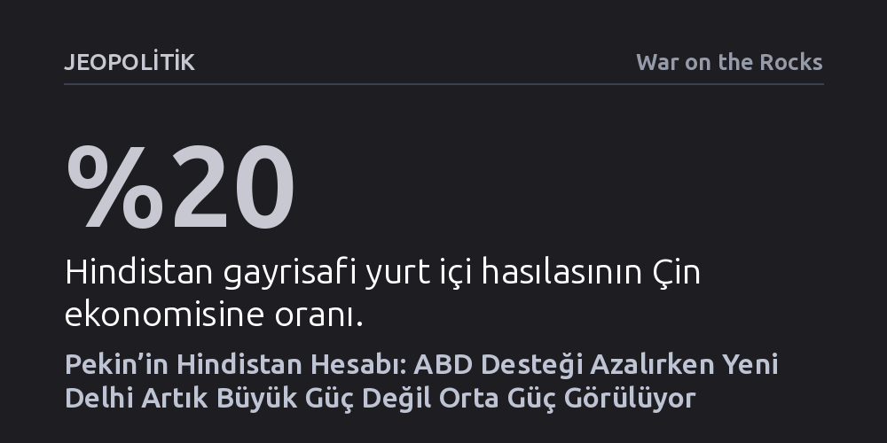

JEOPOLITIK · War on the Rocks · 2026-10-17
Pekin, ABD desteğinin azalmasıyla Hindistan’ı küresel bir süper güç değil, yönlendirilemez ve öngörülebilir bir orta güç olarak yeniden tanımladı. Bu algı Çin’in kuşatılma kaygısını hafifletirken, Yeni Delhi’yi sanayi ve tedarik zincirlerinde bağımlı tutma stratejisini pekiştiriyor.
Hindistan’ın Batı ile ittifak kurarak Çin’i çevreleyeceği tezinin aksine, Pekin’in Yeni Delhi’yi artık askeri bir tehdit değil, tedarik zincirleriyle kontrol altında tutulan bir orta güç saydığını gösterir.

Son dönemde Çin ile Hindistan ilişkilerinde gözlemlenen belirgin yumuşama, uluslararası kamuoyunda genellikle Washington’ın Yeni Delhi’ye yönelik koşulsuz stratejik cömertliğinin sona ermesiyle açıklanıyor. ABD’nin yaklaşımındaki ani değişim, Hindistan’ın uzun süredir Batı desteğine yaslanan dış politika dengesini sarstı ve ülkede derin bir yön kaybı hissine yol açtı. Yaşanan bu kırılmanın ardından Hintli stratejist ve uzman heyetleri, bozulan dengeyi yeniden kurabilmek amacıyla peş peşe Pekin’i ziyaret etmeye başladı.
Çinli uzmanlar, Yeni Delhi’den gelen bu temas arayışını Hindistan’ın geleneksel orta güç köklerine dönüşü olarak okuyor. Çin ile ilişkilerini onarmaya çalışan Hindistan, aynı zamanda Avrupa, Japonya ve Kanada gibi diğer orta güçlerle temaslarını yoğunlaştırarak ekonomik otoritesini ve stratejik hareket alanını korumayı hedefliyor. Ancak Pekin açısından bu diplomatik canlanma, iki ülke arasında derin ve samimi bir güven ortamının kurulmasından ziyade, Hindistan’ın sıkıştığı jeopolitik köşeden çıkmak için geliştirdiği taktiksel bir dengeleme çabasından ibaret görülüyor.
Pekin’in Hindistan politikasındaki en temel soru her zaman ülkenin gerçek güç statüsü oldu: Hindistan sahici bir küresel süper güç mü, yoksa yalnızca potansiyeli yüksek bir orta güç mü? Hindistan ekonomisinin büyüklüğü Çin’in yaklaşık beşte biri seviyesinde kalsa da, Modi hükümetinin benimsediği "dünyanın gurusu" söylemi Pekin’de ciddi bir dikkatle izlendi. Geleneksel askeri doktrininde hasmının kapasitesini abartıp kendi gücünü saklama eğilimi taşıyan Çin, ABD’nin sınırsız teknolojik, ekonomik ve diplomatik desteğiyle Hindistan’ın hızla denk bir küresel süper güce dönüştürülebileceğinden endişe etti. Tıpkı 1970’lerden itibaren Sovyetler Birliği’ne karşı Çin’i büyüten Amerikan stratejisinin benzer şekilde Hindistan için işletilmesinden korkuldu.
Ancak Washington’ın desteği zayıfladıkça Pekin’in algısı köklü biçimde değişti ve Çinli analistler Hindistan’ın yönlendirilemez bir aktör olduğu sonucuna vardı. Yeni Delhi; ABD’nin tüm baskı ve teşviklerine rağmen Rusya ile enerji bağlarını koparmadı, kalıcı bir askeri müttefik olmayı reddetti ve olası bir Tayvan krizinde Çin’e batıdan askeri bir cephe açmaya yanaşmadı. Çinli uzmanlar, Hindistan’ın bu tavrını Hint kültüründeki bağış kavramıyla açıklıyor: Bu anlayışa göre yardım kabul eden taraf, verene ruhani arınma fırsatı sunduğu için aslında ona lütufta bulunmuş sayılıyor; dolayısıyla Yeni Delhi kendisini Washington’a borçlu hissetmiyor. Ne ödülle ne de yaptırımla yönlendirilebilen bu katı stratejik özerklik, Hindistan’ın Çin için bir tehdit olma potansiyelini zayıflatırken, aynı zamanda Pekin nezdinde peşinden koşulacak bir ortak olma cazibesini de yok etti.
Hindistan’ın küresel bir tehdit olamayacağı kanaatine varan Pekin, ikili ilişkilerde güvenliğini askeri çatışmadan ziyade ekonomik kaldıraçlarla inşa etmeyi tercih ediyor. Hindistan’ın uyguladığı katı düzenlemeler doğrudan Çin yatırımlarını sınırlasa da, dış ticaret bambaşka bir bağımlılık mekanizması yaratmış durumda. İki ülke arasındaki yıllık ticaret hacmi 151 milyar doları aşarken, Hindistan’ın Çin’e karşı verdiği dış ticaret açığı 112 milyar doların üzerine çıkıyor. Karşılıklı ticaretin yüzde 87’sinin Çin ihracatından oluşması, Yeni Delhi’nin sanayi üretiminde ve kritik tedarik zincirlerinde Pekin’e ne ölçüde bağımlı olduğunu net biçimde kanıtlıyor.
Bu tablonun en kritik boyutu ise Çin’in diğer Güney Asya komşularına sunduğu yerel güçlendirme modelini Hindistan’dan bilinçli biçimde esirgemesidir. Çin; Kuşak ve Yol Girişimi kapsamında Pakistan’a yeşil enerji ve dijital altyapı, Bangladeş’e teknoloji, Nepal’e ise tarımsal modernizasyon transfer ederek yerel sanayileri içeriden kalkındırırken, Hindistan ile ekonomik ilişkilerinde bu tür teknoloji ve kapasite paylaşımından titizlikle kaçınıyor. Pekin, Hindistan’ın yüksek teknoloji üretimine ve sanayi dönüşümüne katkı sağlayacak alanlara bilerek girmeyerek, komşusunu Çin ara mallarına bağımlı bir tüketici pazarında tutmayı hedefliyor.
Pekin ile Yeni Delhi arasındaki ilişkilerin geleceğini kestirmek hem kolay hem de güç. Kolay, çünkü sınır uyuşmazlıkları, Keşmir gerilimi ve bölgesel rekabet gibi yapısal engeller ilişkilerin yükselebileceği tavanı sınırlıyor. Güç, çünkü çatışma ve güvensizlik geçmişi ilişkilerin düşebileceği bir dip noktanın olmadığını gösteriyor. Mevcut normalleşme adımları ise iki temel belirsizliğe dayanıyor: Bir yanda Hindistan iç siyasetinde Modi sonrası liderlik tartışmaları ve iktidar bloğu içindeki çatlaklar, diğer yanda ise Washington’ın Trump sonrasında yeniden Çin karşıtı bir ortaklık arayışıyla Hindistan’ın kapısını çalma ihtimali.
Geleceğin belirsizliği iki ülkeyi de seçeneklerini açık tutmaya ve bağlayıcı adımlardan kaçınmaya yöneltiyor. Fakat bu durum Batı ittifakı açısından görünmeyen büyük bir maliyet doğuruyor: Eğer Çin, Hindistan’ın Washington ile kapsamlı bir askeri ittifaka girmeyeceğine gerçekten ikna olduysa, ABD’nin Hindistan üzerinden Pekin’e karşı kurduğu caydırıcılık kartı da etkisini yitirmiş demektir. Yine de Çin’in Hindistan’ı bütünüyle esnemez ve durağan bir aktör olarak kodlaması önemli bir risk barındırıyor; nitekim savunma tedariki ve Tayvan konularında Yeni Delhi’nin manevraları, dengelerin siyah-beyaz değil çok daha ince hesaplarla ilerlediğini gösteriyor.